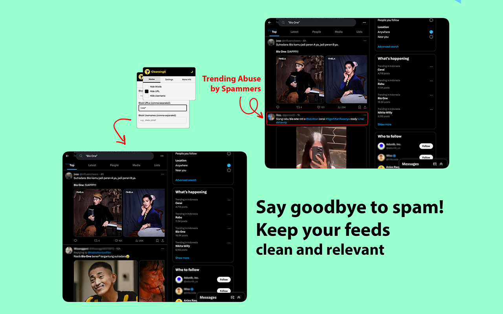
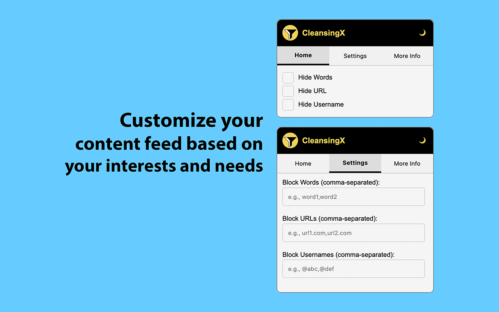
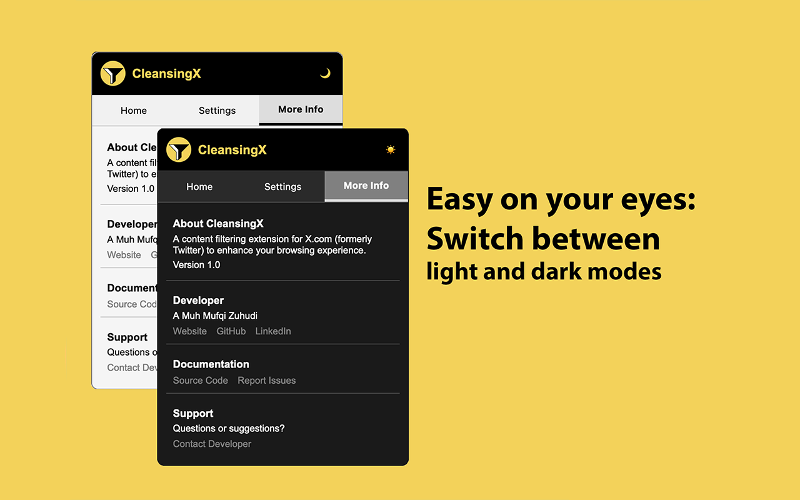

CleansingX
A browser extension that helps filter and hide unwanted content on X.com (formerly Twitter) to enhance your browsing experience.
Filter unwanted content on X.com
Hide posts based your need. Simple interface to manage your content blocking rules in seconds.


Powerful costumization for your content feed
Use * for flexible pattern matching to block variations of words, URLs, and usernames.
Dark & Light Themes
Switch seamlessly between dark and light modes to match your preferred viewing experience.
